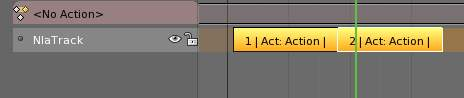
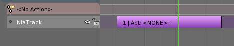
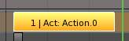
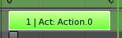
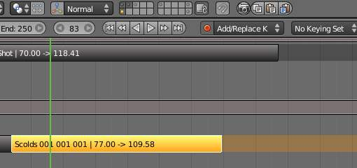
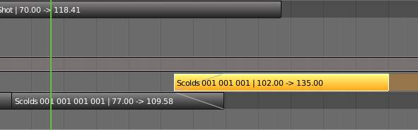
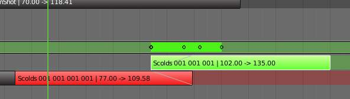

Non-Linear 动画 Editor¶
The NLA editor can manipulate and repurpose actions, without the tedium of keyframe handling. Its often used to make broad, significant changes to a scene’s animation, with relative ease. It can also repurpose, and “layer” actions, which make it easier to organize, and version-control your animation.
Tracks¶
Tracks are the layering system of the NLA. At its most basic level, it can help organize strips. But it also layers motion much like an image editor layers pixels - the bottom layer first, to the top, last.
Strips¶
There are three kinds of strips - Action, Transition, and Meta. Actions contain the actual keyframe data, Transitions will perform calculations between Actions, and Meta will group strips together as a whole.
Creating Action Strips¶
Any action used by the NLA first must be turned into an Action strip. This is done so by clicking the next to the action listed in the NLA. Alternatively, you can go to .
{kind=link}
Action Strip.
Creating Transition Strips¶
Select two or more strips on the same track, and go to
参考
Transition Strip.
Grouping Strips into Meta Strips¶
If you find yourself moving a lot of strips together, you can group them into a Meta strip. A meta strip can be moved and duplicated like a normal strip.
参考
Shift-G

Shift-select two or more strips.. |

Combine them into a meta strip. |
{kind=link}
{kind=link}
A meta strip still contains the underlying strips. You can ungroup a Meta strip.
参考
Alt-GEditing Strips¶
The contents of Action strips can be edited, but you must be in Tweak Mode to do so.
参考
Tab

Strip in NLA mode.. |

Strip in Tweak mode. |
{kind=link}
{kind=link}
If you try moving the strip, while in edit mode, you will notice that the keys will go along with it. On occasion, you will prefer the keys to remain on their original frames, regardless of where the strip is. To do so, hit the unpin icon, next to the strip.
Nla strip with pinned keys.
Strip moved, notice the keys move with it.
The unpinned keys return to their original frames.
When your finished editing the strip, simply go to . Note the default key for this is Tab.
Re-Instancing Strips¶
The contents of one Action strip can be instanced multiple times. To instance another strip, select a strip, go to
Now, when any strip is tweaked, the others will change too. If a strip other than the original is tweaked, the original will turn to red.

Original strip. |

Duplicated strip. |

Duplicated strip being edited. |
{kind=link}
{kind=link}
{kind=link}
Strip Properties¶
Strip properties can be accessed via the NLA header.
参考
Renaming Strips¶
All strips can be renamed, in the “Active Track” section in the Strip Properties.
Active Strip¶
Elements of the strip itself. An Action Strip can be either an Action Clip, or a Transition Clip.
Note
Note that the ‘Strip Extents’ fields determine strictly the strip, and not the action. Also, the “Hold” value in the Extrapolation section means hold both beginning, and after. This can cause previous clips to not work, if checked.
Active Action¶
This represents the ‘object data’ of the strip. Much like the transform values of an object.
Evaluation¶
This determines the degree of influence the strip has, and over what time.
If influence is not animated, the strips will fade linearly, during the overlap.
Strip 修改器¶
Like its close cousins in mesh and graph editing, 修改器 can stack different combinations of effects for strips. Obviously there will be more to come on this.